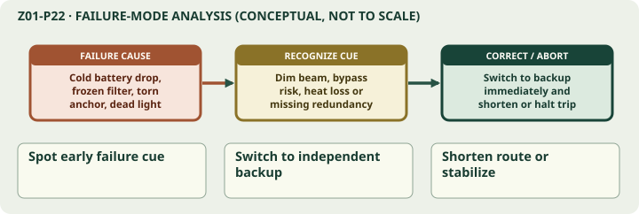

Z01-P22 · Survival fundamentals · New manuscript
Recognize and recover from core gear failure
Spot silent or sudden failure of lighting, navigation, water treatment or shelter gear and shift safely to backups.
When it applies · Field travel or home emergencies when primary equipment breaks, freezes, leaks or loses power.
Equipment · Redundant core gear (backup light, paper map, secondary water method, repair tape and emergency shelter).

Actions
- Watch for early failure cues—dimming headlamp, phone battery drop in cold, frozen water filter, jammed stove valve or torn shelter anchor.[E02, W28, C15, ED]
- Pause on safe ground and switch immediately to your independent backup system rather than improvising hazardous repairs under stress.[E02, W09, ED]
- Recalculate your safety margin once a primary system fails; a trip relying on its last backup is a cue to turn back or stabilize early.[E01, T06, ED]
Failure recognition · Continuing deeper into remote terrain after losing primary light, offline navigation, shelter integrity or water treatment without a working backup.[E02, W28, ED]
Verify · Confirm the backup system functions cleanly right now and that the revised route matches your remaining safety margin.[E02, ED]
Stop or change course · When both primary and backup systems for warmth, shelter, navigation or water fail, halt onward travel, protect the group and seek assistance.[E02, T06, W09]
Evidence and editorial notes
- C15 · NPS · Wildland Fire Safety (current web edition)
- Section: Wildland Fire Safety > Campfires and Stoves · Conditions: Outdoor cooking with portable liquid or canister stoves
Support: Operate stoves on level cleared ground away from tents and dry fuels, cool completely before refueling, and move away from any spilled fuel before lighting.
Limitations: Fuel canisters behave differently in cold weather and high elevation; follow manufacturer limits. · Conflicting evidence: None; aligns with CPSC-C and USFS-FIRE.
Editorial note: Governs stove setup, refueling isolation, and spill failure recognition. · Specialist reviewer: Portable appliance safety and fire prevention
Primary source · checked 2026-11-24 - E01 · Minnesota DNR · Safety in State Forests (current web edition)
- Section: Before your trip and while visiting · Conditions: State-forest travel and backcountry planning
Support: Know the route, check conditions, carry navigation and safety equipment and share trip details.
Limitations: Conditions and trail maintenance vary seasonally across forest units. · Conflicting evidence: None; aligns with NPS-H.
Editorial note: Foundation for trip planning and pre-departure risk checks. · Specialist reviewer: Land management and search and rescue
Primary source · checked 2026-11-24 - E02 · NPS · Ten Essentials (current web edition)
- Section: Navigation; insulation; emergency shelter; emergency food and water · Conditions: Outdoor trips; adjust kit to season and route
Support: Carry essential systems including navigation, insulation, light, water and emergency shelter.
Limitations: Carrying items without practice or cold-weather verification does not ensure readiness. · Conflicting evidence: None; baseline kit system architecture.
Editorial note: Supports failure-mode packing and kit verification cards. · Specialist reviewer: Field education and search and rescue
Primary source · checked 2026-11-24 - T06 · NPS · Outdoor Emergency Plan (current web edition)
- Section: If you get lost or hurt; call for help · Conditions: Outdoor US emergency
Support: Communicate location, last known point, situation and needs. Stay put when unable to establish a safe route unless immediate danger requires movement.
Limitations: Cell signal is unreliable in backcountry terrain; pre-trip plans bridge communication gaps. · Conflicting evidence: None; core lost-person decision rule.
Editorial note: Foundation for stay/signal/move and dispatch handoff cards. · Specialist reviewer: Search and rescue
Primary source · checked 2026-11-24 - W09 · CDC · Water Treatment Options When Hiking, Camping, or Traveling (current web edition)
- Section: Overview and water treatment methods · Conditions: Hiking or camping where no safe source is confirmed
Support: Even clear water can contain germs. Assess the supply and carry safe water or an appropriate treatment method.
Limitations: Visual clarity never detects microbes or dissolved chemical contaminants. · Conflicting evidence: None across CDC/NPS/EPA sources.
Editorial note: Reinforces clarity-is-not-potability invariant across all Z04 cards. · Specialist reviewer: Drinking-water safety and public health
Primary source · checked 2026-11-24 - W28 · Sawyer · Water Filtration FAQs (Current manufacturer FAQ)
- Section: Water filtration FAQ > filter freezing · Conditions: Sawyer wet hollow-fiber filters; other models follow their exact manufacturer instructions
Support: Freezing can damage a wetted filter. Sawyer advises replacing a filter suspected of freezing; visual inspection cannot establish its integrity.
Limitations: Do not extrapolate replacement or integrity-testing instructions to other products without their manuals. · Conflicting evidence: None; critical cold-weather filter failure mechanism.
Editorial note: Drives cold-weather filter protection and failure-recognition cards. · Specialist reviewer: Drinking-water treatment and cold-weather operations
Primary source · checked 2026-11-24
Source lineage · NPS Ten Essentials, CDC filter limits and Ready.gov kit; new manuscript · Classification · New manuscript.